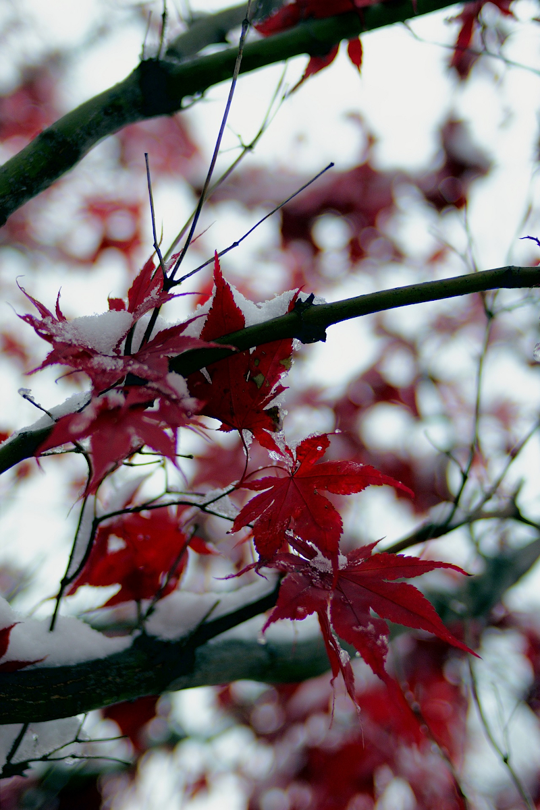
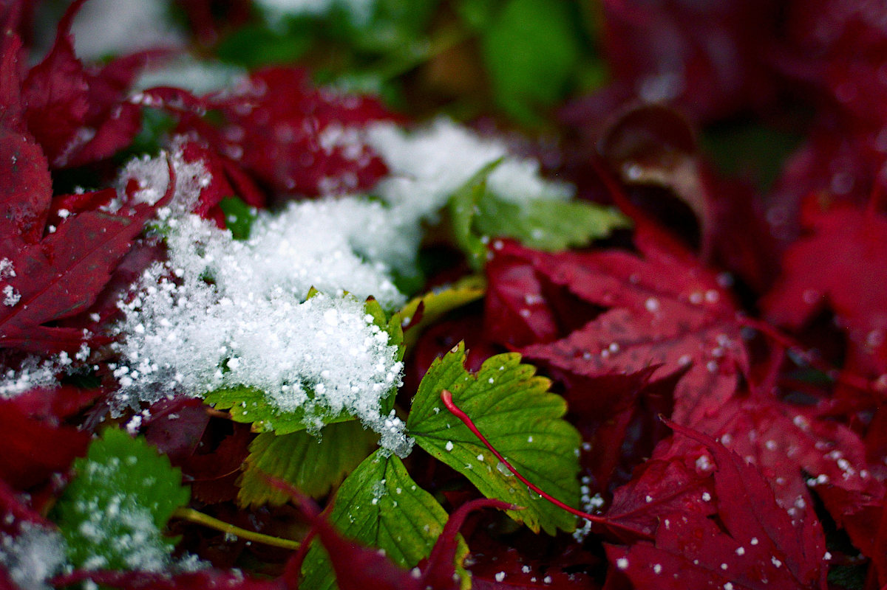

Nikon D3300 | Nikkor 35/1.4 AI-S
Nikon D3300 | Nikkor 35/1.4 AI-S
The following images were taken during the afternoon of November 7th and most of the snow in the photos was already there from the day before. However, it did start snowing again when I was taking photos and thus I had to head back in before my camera got soaked. I was pretty surprised by how many of the plants were still alive at this point. (They remained green for up to a week after this first snowfall.) This was also the first proper time I got to use my newly purchased Nikkor 35mm f/1.4 AI-S that I bought in Hong Kong over the summer.
Nikon D3300 | Nikkor 35/1.4 AI-S
The Japanese maple tree in my backyard.
Nikon D3300 | Nikkor 35/1.4 AI-S
Some nearly frozen asiatic lilies.
Nikon D3300 | Nikkor 35/1.4 AI-S
Close up of the lilies from above showing the seed pods. I don't think the seeds were viable.
 Nikon D3300 | Nikkor 35/1.4 AI-S
Nikon D3300 | Nikkor 35/1.4 AI-S
Tiny little icicles on the Japanese maple.
Nikon D3300 | Nikkor 35/1.4 AI-S
Nikon D3300 | Nikkor 35/1.4 AI-S
Nikon D3300 | Nikkor 35/1.4 AI-S
Nikon D3300 | Nikkor 35/1.4 AI-S
The Nikkor 35mm f/1.4 has very distinctive bokeh (the blurry bits) unlike any other lens that I've tried. The majority of people will
find that this bokeh looks too "busy" but I think it adds some amount of visual interest. This lens can also sometimes
display an unusually high amount of longitudinal chromatic abberation, (see the rainbow coloured edges
most prominent in the bokeh,) which more or less expected in a lens with such an odd design.

Nikon D3300 | Nikkor 35/1.4 AI-S
My strawberry plants have been hidden under a layer of leaves from my Japanese maple tree. In contrast to the above
photo, this one doesn't seem to have any visible chromatic abberation despite being shot at the same aperture.
Nikon D3300 | Nikkor 35/1.4 AI-S
Nikon D3300 | Nikkor 35/1.4 AI-S
Bright red leaves on my blueberry bush.
Left: a fairly standard "double Gauss" design used by Nikon for virtually all their 50mm lenses. Note the symmetry between the front and rear elements.
Right: The lens design created for the Nikkor 35mm f/1.4 AI-S. Its unusual design was largely influenced by Nikon's decision
to create this lens with a front filter thread size of 52mm. That is, the maximum size of the front element was
constrained by this and being a fairly fast wide-angle lens, this meant that a lot of optical engineering was needed to meet
the requirement.
This lens also has what's called "floating elements", or what Nikon calls the "Close Range Correction (CRC) system".
This means that one or more lens elements move independently from the main focusing helicoid. As you turn the focusing ring,
the distance between the elements themselves will actually change, allowing for better performance across different focusing
distances. Although this type of technology was new and revolutionary in 1981, it's now a fairly common feature of modern
lenses (along with low dispersion glass, optical image stabilization, and a whole plethora of other features.)
Side note: Nikon has a series of 71 articles called "The Thousand and One Nights" on 71 different lenses produced throughout the history of the company.
They're a cool read if you're interested in the design aspects and development of these lenses like I am.
Image source/link to articles: https://imaging.nikon.com/history/story/
© Trevor Li 2019 - 2020, all rights reserved. All images taken by Trevor Li unless noted.